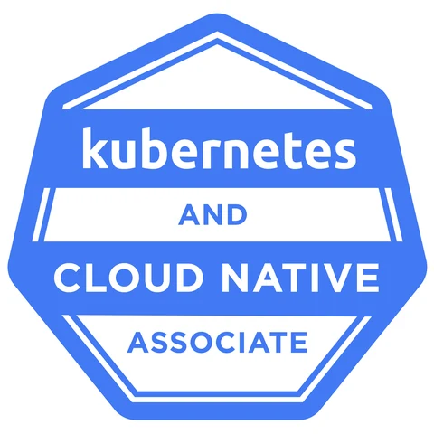

The Linux Foundation · Active
Verify on Credly ↗KCNA: Kubernetes and Cloud Native Associate
Validates foundational knowledge across Kubernetes architecture, cloud-native application delivery, observability, and the CNCF ecosystem.
 Keshav
KeshavCredentials / Cloud native
Professional certification across Kubernetes, cloud-native architecture, application delivery, and observability.
Certification

Validates foundational knowledge across Kubernetes architecture, cloud-native application delivery, observability, and the CNCF ecosystem.